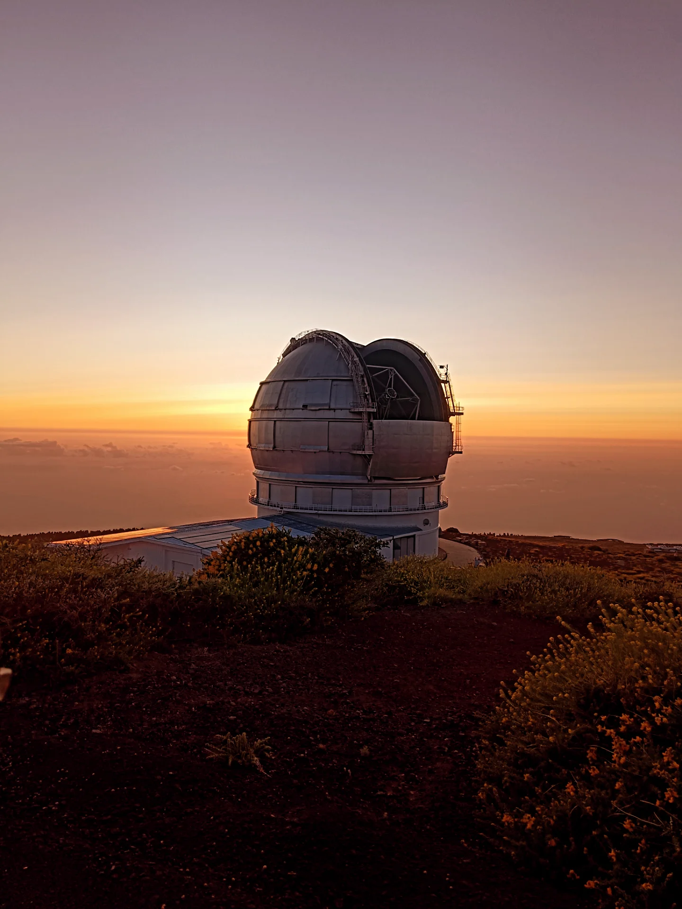
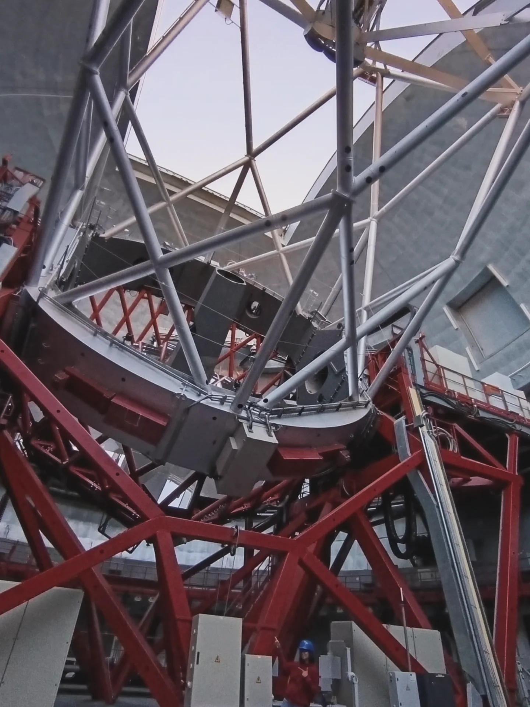
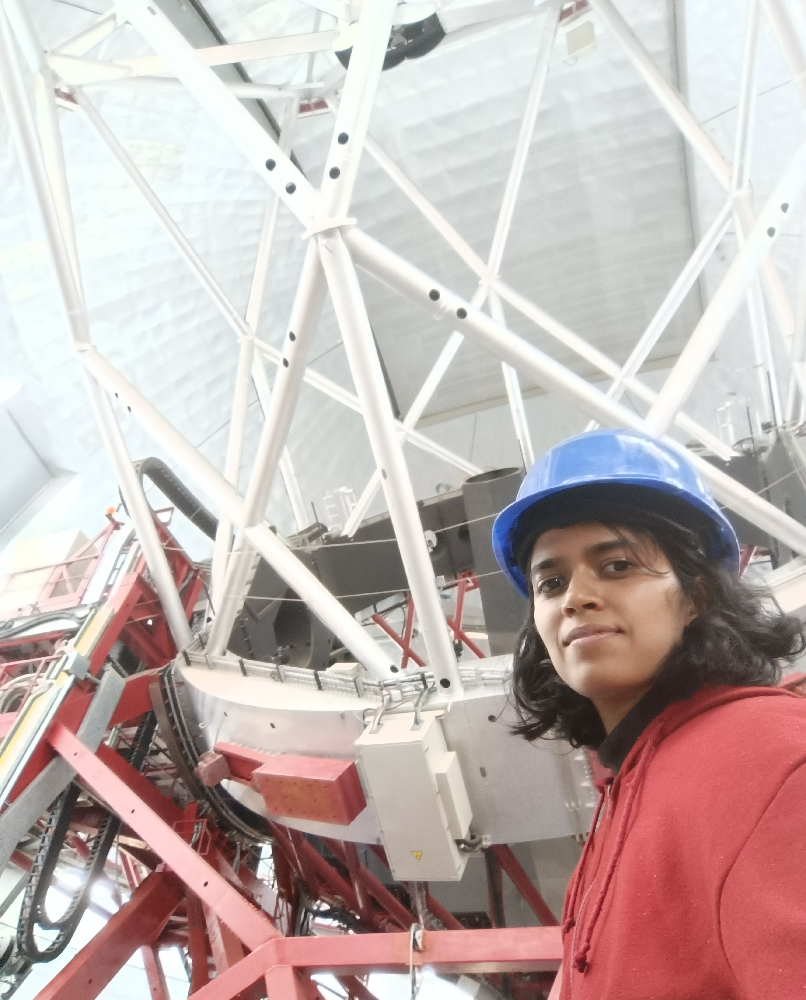

SciX / NASA ADS Bibliographic Library
Complete publication record, citation metrics, and co-authored consortium works.
Open Library
Role: Utilised Euclid NISP red-grism spectroscopy across the Deep Field North. Led detection and spectroscopic classification and characterisation of newly detected and known ultracool dwarfs.
Role: Leveraged high-precision HST multi-band photometry and astrometry. Conducted photometric analysis and fraction determination of binaries and blue straggler stars in Magellanic globular clusters.
Gaia Data Release 4: The Bottom of the Main Sequence
Gaia Collaboration, L. M. Sarro, R. L. Smart, A. Mohandasan (3rd Author), et al.
ESA Flagship Mission Performance Verification Paper
Role: Utilised Gaia DR4 astrometric and spectrophotometric datasets. Served as 3rd author of the paper, leading analysis on luminosity functions, stellar orbital integration, and membership classifications at the substellar boundary.
Exploring ultracool dwarfs with Euclid and Gaia
Anjana Mohandasan, R. L. Smart, C. Reylé
Submitted to Astronomische Nachrichten
Role: Combined optical-to-NIR datasets from Euclid and Gaia spectroscopy. Developed multi-mission SED fitting frameworks for robust substellar parameter estimation, including stellar radii.
VLT/FLAMES, Stetson & Gaia
In Prep • A&A
Anomalous population in Omega Centauri: Binary origin
Mohandasan, A., E. Pancino, L. Monaco, et al.
Advanced manuscript in preparation for A&A
Role: Analysed multi-epoch high-resolution spectra from VLT/FLAMES combined with Stetson photometry and Gaia astrometry to investigate radial velocity variability and binary origin signatures in anomolous population in massive Galactic globular clusters.
Gaia Data Release 4: Validation and Technical Report
Gaia Collaboration, et al. (incl. A. Mohandasan)
Consortium Performance Verification Paper
Role: Contributed to astrometric and photometric catalogue validation routines for Coordination Unit 9 (CU9) data products.
Faetures: Publicly released master spectroscopic catalogue containing 33 newly confirmed ultracool dwarfs (M7 to T1) and spectral classifications across the Euclid Deep Field North.
Faetures:Archived doctoral research data repository and thesis supplementary records detailing homogeneous cluster binary fractions across several Galactic and Magellanic Cloud star clusters.
Gran Telescopio Canarias (GTC)
On-Site Run • June 2025
On-Site Observing Run & Approved Observational Programs (Co-I)
Conducted three nights of on-site observations at the Roque de los Muchachos Observatory from the 7th to the 10th of June 2025. Co-I of an approved GTC observational proposal allocating 6 nights in EMIR and OSIRIS spectroscopic and imaging modes for follow-up validation of substellar targets from Euclid UCDs study.



James Webb Space Telescope Program
Co-I of an approved JWST observational proposal totaling 21 hours of observation time dedicated to high-resolution infrared characterization.
Proposal ID: 9012 | Cycle: 4
Focus: Space-based near-infrared spectrophotometry of faint substellar populations.
Hubble Space Telescope Program
Co-I of an approved Hubble Space Telescope observational proposal targeting high-precision cluster CMDs and stellar multiplicity.
Proposal ID: 17075 | Cycle: 30
Focus: High-resolution spatial and photometric stellar population analysis.